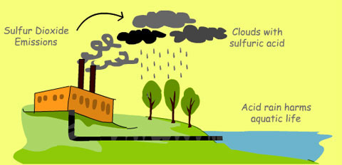

Industrial causes of water pollution:
Industries cause huge water pollution with their activities. These come mainly from:
Sulphur –
This is a non-metallic substance that is harmful for marine life.

Asbestos –
This pollutant has cancer-causing properties. When inhaled, it can cause illnesses such as asbestosis and some types of cancer.
Lead and Mecury –
These are metallic elements and can cause environmental and health problems for humans and animals. It is also poisonous. It is usually very hard to clean it up from the environment once it gets into it because it is non-biodegradable.
Nitrates & Phosphates –
These are found in fertilizers, and are often washed from the soils to nearby water bodies. They can cause eutrophication, which can be very problematic to marine environments.
Oils –
Oils form a thick layer on the water surface because they do not dissolve in water. This can stop marine plants receiving enough light for photosynthesis. It is also harmful for fish and marine birds. A classic example is the BP oil spill in 2012 with killed thousands of animal species.
Oil Pollution by Oil Industires Routine shipping, run-offs and dumping of oils on the ocean surfaces happen everyday. Oil spills make up about 12% of the oil that enters the ocean. Oil spills cause major problems, and can be extremely harmful to local marine wildlife such as fish, birds and sea otters and other aquatic life. Because oil does not dissolve, it stays on the water surface and suffocates fish. Oil also gets caught in the feathers of sea birds, making it difficult for them to fly. Some animals die as a result.